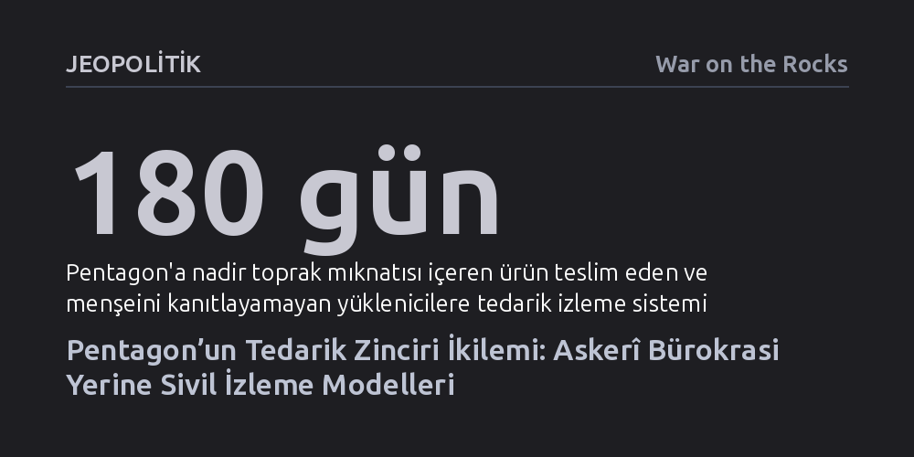

JEOPOLITIK · War on the Rocks · 2026-10-20
Çin'in kritik madenlerdeki hedefli ihracat kısıtlamalarına karşı bocalayan Pentagon, savunma tedarik zincirini sıfırdan ve katı kurallarla denetlemek yerine sivil izleme sistemlerinden yararlanmalıdır. Özel sektörün geliştirdiği esnek modeller, savunma sanayiine hem hız kazandıracak hem de küresel tedarikçilerin katılımını güvenceye alacaktır.
Savunma sanayiinde tedarik güvenliğinin ağır devlet bürokrasisi ve katı regülasyonlarla değil, sivil sektörün geliştirdiği esnek ve şeffaf denetim mekanizmalarını benimseyerek sağlanabileceğini gösterir.

Amerika Birleşik Devletleri savunma sanayii altyapısını yeniden ayağa kaldırmaya çalışırken, artık kontrol edemediği ve büyük ölçüde işleyişini kavrayamadığı devasa bir küresel üretim ekosistemiyle yüzleşiyor. Çin, kritik hammadde ve madenlerin geçtiği kilit tedarik düğümlerine yönelik hedefli ihracat kontrolleri ve özel lisans şartları uygulayarak stratejik bir üstünlük kurmuş durumda. Washington ise bu hamlelere çoğunlukla kapsamı geniş fakat sahadaki etkisi sığ kalan genel kısıtlamalarla yanıt veriyor. Bu durum, Pekin'in tedarik zincirini adeta hassas güdümlü mühimmatla nokta atışı vurmasına karşılık, ABD'nin hâlâ eski tip kör bombalarla karşılık vermesine benziyor.
Savunma stoklarını muhafaza etmek, caydırıcı bir askerî güç sürdürmek ve kriz anlarında üretim kapasitesini hızla artırabilmek, kritik malzemelerin nereden geldiğini ve üretimlerinin nasıl ölçeklenebileceğini çok iyi anlamayı gerektiriyor. ABD yönetimi içinde bu tedarik zincirlerini takip etme sorumluluğu en büyük bütçeye sahip kurum olan Savunma Bakanlığına (Pentagon) verilmiş durumda. Ancak Pentagon, modern silah sistemlerinin dayandığı küresel ticari ağların karmaşıklığını tek başına çözebilecek araçlara henüz sahip değil.
Mevcut kırılganlığın kökleri son elli yılın sanayi tercihlerine dayanıyor. 1970'lerden 1990'lara kadar Çinli karar vericilerin temel önceliği, kritik madenleri Batı pazarlarına mümkün olan en düşük fiyatlarla satmaktı. Amaç pazar payı kazanmak, maden işleme tesislerini ve alt kademe teknolojileri kendi sınırları içine çekmekti. Çin bu hedefi tutturduktan sonra stratejisini hızla değiştirdi ve katma değeri yüksek nihai imalata odaklanarak küresel tekeline giden yolu inşa etti.
Buna karşılık Amerikan sanayii, 1990'lardan salgın sonrasına kadar stokları en aza indiren 'yalın üretim' felsefesine kilitlendi. Öncelik dayanıklı ve güvenli tedarik ağları kurmak değil, en ucuz ve en hızlı teslimat yapan hatlara bağlanmaktı. Sivil tüketici elektroniği ve tekstil sektörleri kamuoyu baskısı ve aktivist ağlar nedeniyle alternatif tedarik zincirleri kurmaya zorlanırken, ana müşterisi ordu olan savunma yüklenicileri bu dönüşümün dışında kaldı. Pentagon, Irak ve Afganistan savaşlarının yarattığı harcama baskısıyla, Çin'in nadir toprak elementlerini jeopolitik bir silah olarak kullanabileceğini gösterdiği krizlerden sonra bile piyasa odaklı ucuz alımlara devam etti.
Son yıllarda Kongre baskısıyla başlatılan ulusal güvenlik tedarik zincirini izleme girişimleri ise bürokratik bir karmaşaya dönüştü. Nadir toprak mıknatıslarının menşeini belgeleme zorunluluğu gibi yasal maddeler çıkarılmasına rağmen, savunma yüklenicileri kurala uyum sağlamak yerine sürekli erteleme ve muafiyet talep ediyor. Pentagon içindeki farklı birimlerin ve komutanlıkların kendi bağımsız tedarik izleme hücrelerini kurmaya kalkışması da savunma ekosistemini ortak bir anlayış yerine daha parçalı bir yapıya sürüklüyor.
Çin hükümetinin uyguladığı model, doğrudan yasaklamalardan çok daha incelikli ve tehlikeli bir mekanizmaya dayanıyor. Pekin, Nisan 2025'te nadir toprak elementlerine ve kritik madenlere doğrudan ihracat yasağı getirmek yerine kapsamlı lisans şartları koydu. Bu uygulama, Çin madenlerine muhtaç yabancı şirketleri ticari sırlarını, üretim süreçlerini ve nihai kullanım alanlarını Pekin'e ayrıntılı biçimde teslim etmeye mecbur bıraktı.
Bu yöntem sayesinde Çin yönetimi, hem küresel tüketim verilerini toplayarak rakipsiz bir stratejik istihbarat havuzu oluşturdu hem de hangi yabancı şirketlerin hammaddeye erişim karşılığında gizli verilerini paylaşmaya razı olduğunu test etti. Çin bu baskıyı üretimdeki tekel konumundan güç alarak rahatlıkla uygulayabiliyor.
Buna karşın ABD'nin maden üretiminde benzer bir küresel hakimiyeti bulunmuyor. Washington'ın tedarik zincirindeki şirketleri tek taraflı dayatmalarla hizaya sokması mümkün değil. Üstelik Uygur Zorla Çalıştırmayı Önleme Yasası sonrasında Çin'in Amerikan menşeli denetim kuruluşlarını ülkede yasaklaması, madenlerin kaynağına dair şeffaflığı daha da kararttı. Dolayısıyla Washington'ın Çin'in dayatmacı yöntemlerini kopyalamaya çalışması sonuç vermeyecektir.
Pentagon'un tedarik zinciri şeffaflığını sağlamak için sıfırdan yeni bir askerî kontrol sistemi icat etmesine gerek yok. Özel sektör ve sivil toplum, çatışma mineralleri ve insan hakları ihlallerini izlemek amacıyla son yirmi yılda son derece işlevsel mekanizmalar geliştirdi. Sorumlu İş İttifakı ya da Kimberley Süreci gibi girişimlerin amaçları ulusal güvenlikten farklı olsa da karmaşık küresel tedarik ağlarında izlenebilirlik sağlama ve üreticileri sisteme dahil etme yöntemleri tam da ordunun ihtiyaç duyduğu tecrübeyi sunuyor. Yazıda belirtildiği gibi “hiç kimse sorumlu madencilikle üretilmiş bir füze istemez”; fakat bu organizasyonların kurduğu şeffaflık yöntemleri askerî ihtiyaçlara kolaylıkla uyarlanabilir.
Savunma Bakanlığı, yeni bir silah platformu tasarlar gibi her bürokratik ofisin kendi istek listesini eklediği ağır bir regülasyon paketi dayatmaktan kaçınmalıdır. Takip edilecek hedefler yalnızca kritik savunma öncelikleriyle sınırlandırılmalı; yani kritik malzemeyi hangi şirketin işlediği, o şirketin kime ait olduğu ve temel asgari kurallara uyulup uyulmadığı tespit edilmelidir.
Ayrıca yabancı madenciler ve alt yükleniciler, hassas ticari verilerini doğrudan Amerikan ordusuna vermek konusunda doğal olarak isteksiz davranacaktır. Bu düğüm, verileri toplayıp yalnızca temel bilgileri doğrulayacak bağımsız üçüncü taraf denetçiler kullanılarak çözülebilir. Pentagon, savunma dışı sektörlerin onlarca yıllık birikimine kulak vererek hem küresel üreticileri kaçırmayacak hem de Çin'in kısıtlayıcı lisans sistemine karşı esnek ve sürdürülebilir bir alternatif inşa edebilir.